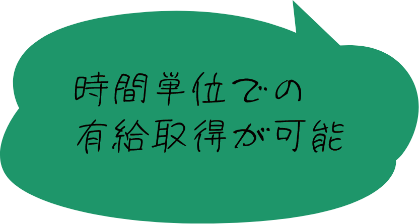
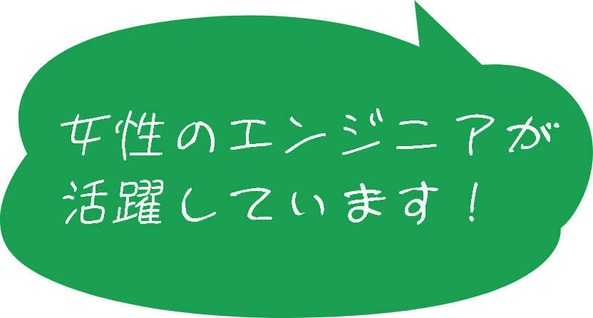
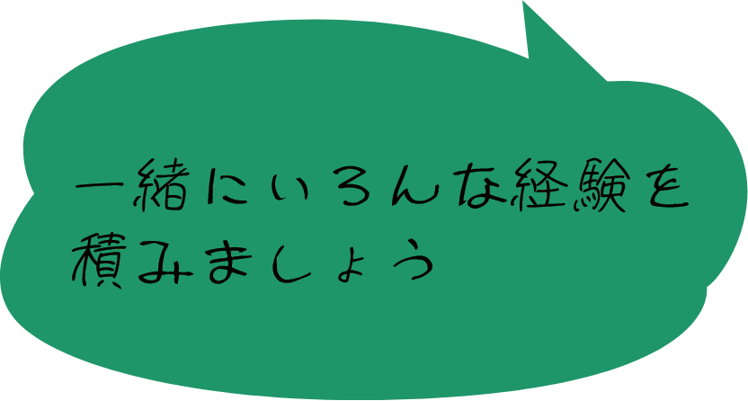

採用情報
recruit
たから箱では1人1人のパートナーが
「学びながらともに成長する」という
意識を大切にしています。
パートナー全員の、
限りなき成長に挑戦し続ける
あなたもパートナーとなり、
一緒に"学び"ませんか？
求める人材
建築構造設計という仕事は、意匠設計、設備設計などの各設計担当者、
また、
施工者、建築主と打合せをしながら一緒にものを作っていく仕事です。
良いものを作るためには、打合せなどのコミュニケーション能力はもちろん、
報告、
連絡、相談、約束は守るなど当たり前のことが当たり前にできることが大切と思っています。
また、常に自分のスキルアップのため努力、何事にもねばり強く取り組み、
みんなと一緒に良いものを作りたいと思っている人を求めています。
- 募集職種・対象
-
構造設計業務に対する意欲のある方
新卒・中途・経験等の経歴は問いません。
業務ご経験者・有資格者の方は優遇いたします。
もちろん、会社説明のみ希望の方もまずはお気軽にご連絡ください。
数字で見るたから箱
- 平均年齢
- 36.6 歳
- 有給取得率
- 90 ％

※みんな気軽に有給をとっています！
高い有給取得率を実現しています！
- 男女比
- 男性 3 名 女性 5 名

- 平均勤続年数
- 6.0 年

社内行事
たから箱ではパートナー同士のコミュニケーションを大切にしています。
みんなで楽しめる社内行事も充実しており、日頃の業務だけでは築けないチームワークは行事を通じて生まれているかもしれません。
- 新年会（1月年始出勤日）
- オフィス近くの蕎麦屋にて、蕎麦を食べるのが恒例です。
- 観桜会（4月初旬）
- 本川沿いの土手で夜桜を観ながらワイワイお食事！
- 創業記念懇親会
（7月上旬） - 社外のゲストを招待して、食事会を開催
- 納涼会（8月）
- ビアガーデンやビアホールで、暑気払いをします。
- クリスマス飾り付け
（12月） - ささやかながら見本町を彩れればと、窓際にイルミネーションの飾りつけ
- 忘年会（12月）
- 鍋など体が温まるメニューで一年の鬱憤を吐き出します！
- 大掃除・納会
（12月下旬） - 全員で2日かけての大掃除！最終日は一年を振りながら締めくくります。
その他、社員旅行、登山、バーベキューなどなど楽しい行事ももりだくさん♪
先輩社員の声
キャリアプランについて
たから箱では社員の事をパートナーと呼びます。
これは、「社長やベテランの先輩社員たちと、パートナーとして仕事をするんだ」という自覚を求めている考えでもあります。
一方で、キャリアをこれから積んでいく若い人にとっては、いきなり社長から「パートナーでしょ？」と言われても困ってしまいます。
たから箱では「新入社員」が「パートナー」になるまでのサポートも行います。
「新入社員」は「パートナー」としての自覚を持ちつつ、必要とされる技術力を先輩と共に仕事をする中で身につけていただきます。
モデルケース
入社する人のスキルや性格、仕事の状況等によって変わりますが、一般的な構造設計者のキャリアについて以下に示します。
- 1年目作図
- 基本的に1年目はCADの作図（基本的にAutoCADを使用）します。
作図を通して、構造的に必要な部材や、各部材の取り付きや納まり等、基本的且つ大切な事を学びます。
- 2年目二次部材の設計
- 二次部材と呼ばれる、小梁やスラブ等の検討を行います。
最初は単純梁や片持ち梁など簡単なモデルで検討を行って、計算書作成の基本を学びます。
- 3年目主架構の設計
- 大梁や柱など、主架構の検討(基本的に一貫構造計算ソフトSS7を使用)を行います。
建物規模や複雑さによって設計難易度は大きく変わります。
- 5年目打合せ
- このころになると一通りの設計は行っているため、取引先と打合せを行います。
ただし、新技術や建物形状に合わせた多岐に亘る設計方針などが存在し、勉強し尽くす事はありません。
これまで学んだ事より更に広く知り、深く理解をする事が必要になります。
採用に関するよくある質問
- 大学院を出ていなくても設計職での採用がありますか？
- あります。基本的にやる気さえあれば学歴に関係なく採用しています。
- 卒業までのあいだに、何を勉強しておけばいいですか？
- 学校での授業をしっかり聴講され、学ばれれば十分だと思います。建築科で学ばれているのであれば、就職してからも同級生や先輩後輩に聞きたいことが出てくるなど、様々な関係が続いていく可能性があります。在学中に、横や縦の繋がりを大切にしておくことも大事かと思います。
- 解析ソフトやCADは何を使っていますか？
- 一貫計算ソフトはSuper Build/SS7、有限要素解析等はmidas iGen、二次部材の設計にはストラクチャー・スイート2、木造の設計にはHOUSE-ST1を使っています。
また、CADはAutoCAD、BIMはRevitを使っています。
-
構造設計とはどんなお仕事
ですか？ - よく学校の授業内容になぞらえて例えているのは、力学の問題を解くのが構造計算だとすると、構造設計というのは、どちらかというと力学の問題を作る作業に似ていると伝えています。
荷重条件や境界条件などを決め、解析ソフトを用いて応力や反力を求め必要な部材断面を決めていく。建物のフォルムを決定づける美しさを追求する仕事です。
- 残業や休日出勤はありますか？
- あります。
ただ、現在の弊社内の雰囲気としては、仕事が忙しい時でも残業はするが、土日はしっかり休むといった空気ができているので、
現場や評価委員会出席などで日にち指定がある場合以外は、休日出勤はほぼないです。
一緒に『構造設計』に向き合って
みませんか？
たから箱への採用応募は
下記よりお申し込みください。
あなたのご応募をお待ちしております。